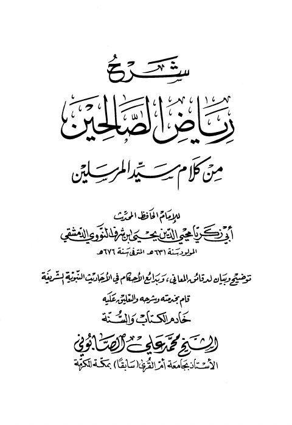

Downloads need an internet connection.
شرح رياض الصالحين من كلام سيد المرسلين ﷺ
Authors: يحيى بن شرف النووي
Editors: محمد علي الصابوني
Publishers: الأفق للطباعة والنشر
**▫️ العنوان: شرح رياض الصالحين من كلام سيد المرسلين ﷺ** ▪️ المؤلف: #يحيى_بن_شرف_النووي ▫️ المحقق: #محمد_علي_الصابوني ▪️ الناشر: #الأفق_للطباعة_والنشر ▫️ تاريخ النشر: 1423هـ 2002م ▪️ بلد النشر: بيروت، #لبنان ▫️ الطبعة: 1 ▪️ عدد الأجزاء: 1 ▫️ الصفحات: 704 ▪️ نوع الوعاء: #كتاب ▫️ التصنيف الرئيسي: #الحديث_وعلومه ▪️ التصنيف الفرعي: #المسانيد_الأخرى_والجوامع ۪